Development and Application of Multiphysics Measurement Systems
1. Measuring Anisotropic Thermophysical Properties of Micrometer-Thick Films
Free-standing micrometer-thick films, such as graphene heat-spreading films and polyimide films, are widely used in fields such as new energy and chip cooling, which makes a thorough understanding of their anisotropic thermal transport properties essential. As film thickness decreases to the micrometer scale, surface morphology, electrical conductivity and other characteristics differ greatly, and characterizing the thermal transport properties of these materials has become a major challenge. At present, the industry generally relies on commercial laser flash analyzers (LFA) to characterize the thermal transport properties of films. However, once film thickness is reduced to the micrometer scale, the reliability of LFA data has been widely questioned for both in-plane (along the film surface) and out-of-plane (through the film thickness) thermal transport properties.
To meet the substantial application demand for thermal measurements of anisotropic micrometer-thick films, our group developed a measurement system based on periodic laser heating to determine the anisotropic thermal diffusivity and thermal conductivity of such films. Unlike LFA and lock-in thermography, this method divides the spatial distribution of the phase into linear and nonlinear regions, and applies one-dimensional and three-dimensional heat conduction models, respectively, to obtain the in-plane and out-of-plane thermal diffusivities of the films. Current test results show that the measurement range of the system covers thermal diffusivities from 1×10⁻⁸ m²/s to 1×10⁻³ m²/s, thicknesses from micrometers to millimeters, and temperatures from 80 K to 500 K. Through collaborations with Zhejiang University, the Ningbo Institute of Materials Technology and Engineering, CAS, and many other institutions in China, the system has successfully measured a variety of anisotropic films, including graphene heat-spreading films, polyimide films and wood fiber films, which is of great significance for the research and development of film materials.
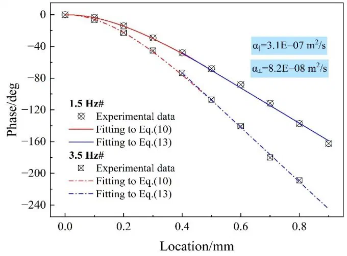 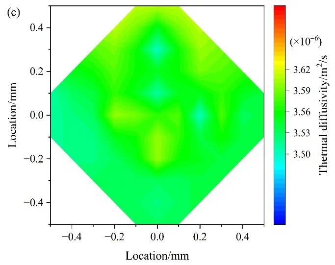 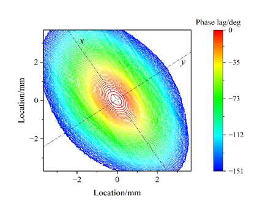 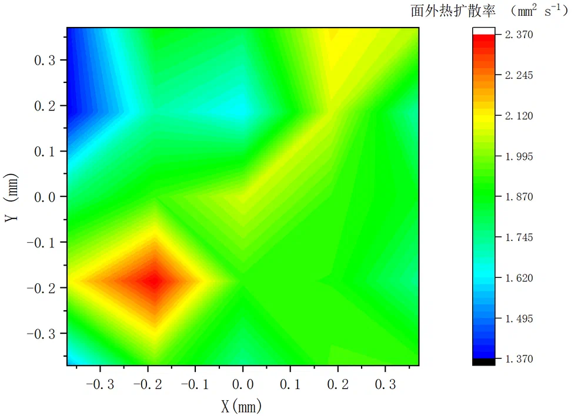 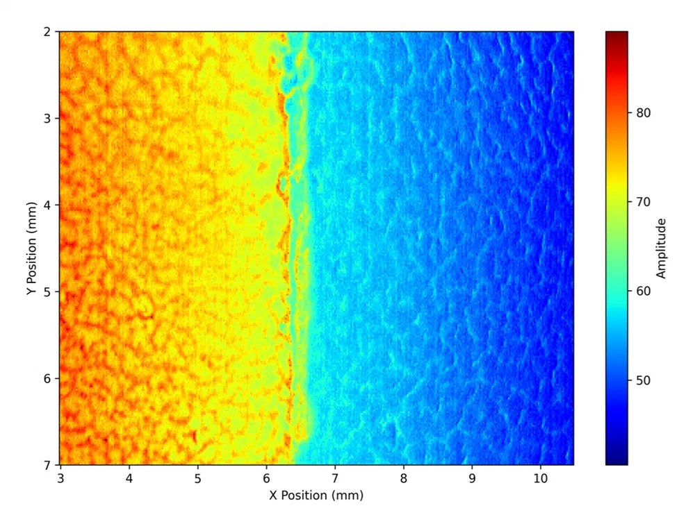 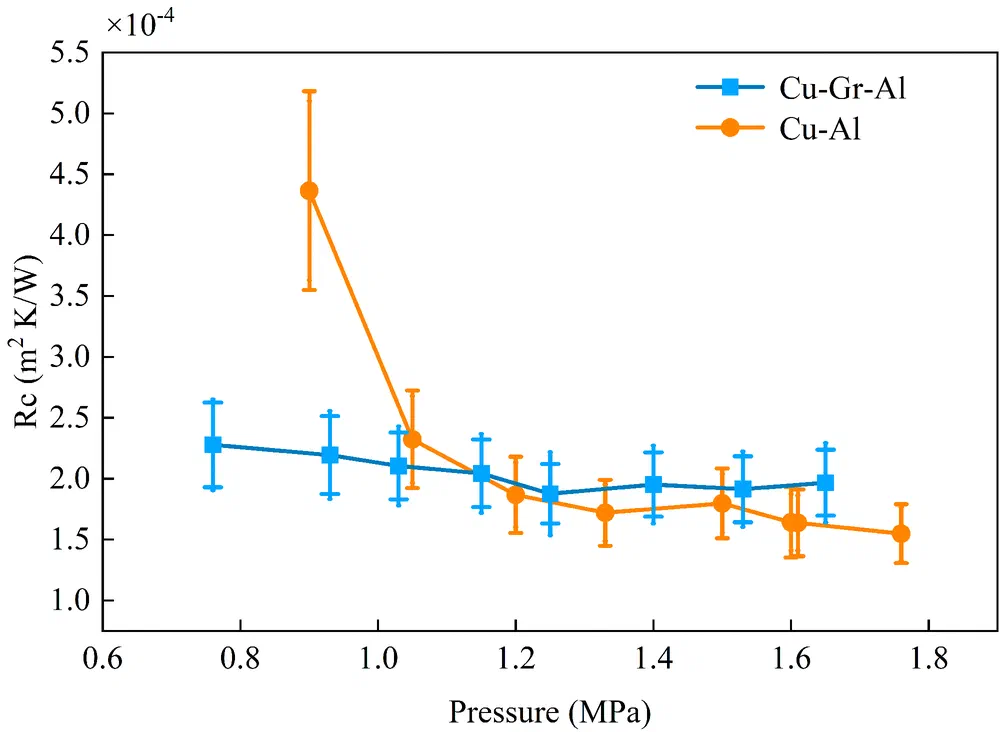
Figure: Measurement of anisotropic thermophysical properties and thermal contact resistance of micrometer-thick films
2. Measuring Thermoelectric Properties and Contact Processes of Micro/Nanostructures
Microdevices for measuring the thermoelectric properties of nanowires were designed and fabricated, resolving a series of technical difficulties in the self-heating measurement of metallic nanowires, including nanowire manipulation, electrical pulses, mechanical vibration and the fabrication of welded joints. The contact resistance between metallic nanowires and electrodes was measured, its influence on the measured thermal conductivity of metallic nanowires was quantitatively analyzed, and the Wiedemann-Franz law was shown to remain valid for single-crystalline metallic nanowires. Comparative experiments on single-crystalline Ag nanowires before and after electron irradiation revealed that the electrical conductivity of the nanowires still decreases significantly even under low-energy electron irradiation; the migration of defects was observed in situ in a transmission electron microscope, revealing the intrinsic mechanism of the conductivity reduction. With the influence of contact resistance on thermoelectric measurements eliminated, the thermoelectric properties of individual polycrystalline Pt nanowires were further measured, yielding a theoretical predictive model for Pt nanowires as a function of diameter and temperature. By comparing the thermoelectric properties of nanoporous gold before (single-crystalline structure) and after (polycrystalline structure) heat treatment, the distinct roles of nanoscale grain boundaries in thermoelectric transport were further clarified.
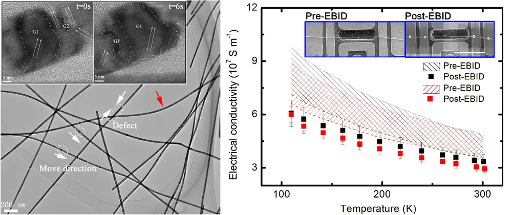 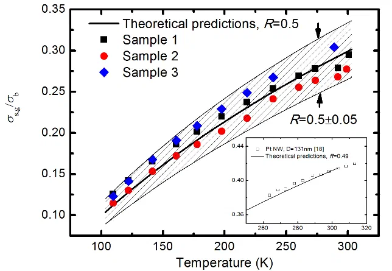 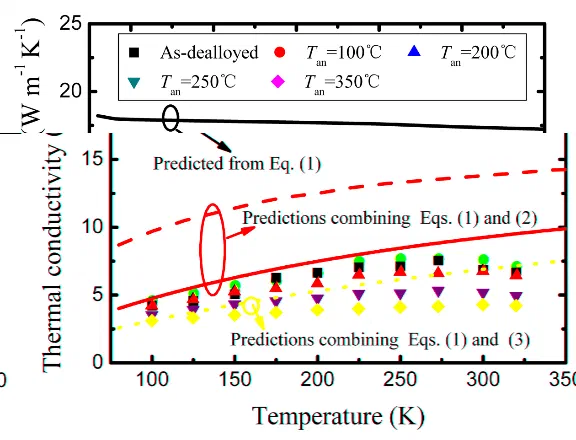
Figure: Measurement of thermoelectric properties of metallic nanowires
To further investigate the thermal transport properties of nanoscale contacts and the factors that govern them, a crossed micro/nanowire structure was developed, and an experimental system was built to measure the thermal contact resistance and electrical contact resistance between two crossed microwires. The microwires were heated to a near-molten state by Joule heating, thereby eliminating the influence of the non-conductive surface layer, and a preamplifier circuit for measuring weak current signals was designed and fabricated, enabling in situ modulation and simultaneous measurement of the electrical and thermal contact resistances between two crossed microwires in a vacuum environment. Based on the temperature dependence of the contact resistance, the different contributions of Maxwell resistance and Sharvin resistance to the contact resistance were distinguished, and the Wiedemann-Franz law was shown to remain valid for metallic contacts in the ballistic/diffusive transport regime.
Figure: Measurement of thermoelectric properties of metallic nanocontacts
Magnetic field control was introduced in a low-temperature vacuum environment, where the Ampère force acting in the magnetic field enables in situ contact and separation of the test wire and the heating wire in the crossed-microwire configuration. By passing alternating current through the heating wire, the thermal contact resistance between the test wire and the heating wire is measured; combined with a steady-state method, the thermal conductivity and thermal diffusivity of the test wire are obtained simultaneously. Using the above crossed-microwire structure and experimental system, the thermal conductivity and thermal diffusivity of both electrically conductive and non-conductive microwire materials were measured on the basis of an accurate evaluation of the thermal contact resistance between the test wire and the heating wire. The results show that although the Ampère force can randomly change the thermal contact resistance between the sample and the heating wire, with the corresponding thermal contact resistances differing by up to several tens of times, the measured thermal conductivity and thermal diffusivity of the sample remain unchanged; under the same contact conditions, the results of different measurement methods can be cross-validated. Together, these ensure the reliability of the measurement results. At present, this system has served multiple institutions, including the Kunming Institute of Physics, the China Academy of Space Technology (CAST) and the Institute of Coal Chemistry, CAS.
Figure: Measurement of thermoelectric properties of microwires
Recently, our group has extended the above system to the direct measurement of the thermal conductivity of polymer micrometer-thick films. Under identical experimental conditions, the thermal impedance introduced by the polymer film is obtained by comparing the third-harmonic voltage across the heating wire before and after it is brought into contact with the polymer film under test. Theoretical and experimental studies show that this thermal impedance decreases linearly with increasing logarithmic frequency, and the corresponding slope is inversely proportional to the in-plane thermal conductivity of the polymer film. Unlike other methods such as the flash method, femtosecond laser thermoreflectance and photothermal methods, this method is insensitive to the surface roughness of polymer film samples, can also be applied to transparent film samples, and directly yields the in-plane thermal conductivity of the film even when the thermal contact resistance and contact size are unknown.


Figure: Direct measurement of the thermal conductivity of micrometer-thick films
3. Development of a Scanning Thermal Microscopy System Based on T-Shaped Thermal Probes
Scanning thermal microscopy (SThM) is currently one of the few feasible experimental approaches for studying the thermoelectric transport properties of microstructures below 100 nm. However, thermal probes are difficult and costly to design and fabricate and suffer from high wear, which greatly limits the adoption and application of SThM. Drawing on the Wollaston probe, our group developed a novel thermoresistive probe based on a T-shaped structure and built an SThM experimental system. The system has already been used for three-dimensional topography measurement of surface structures with high aspect ratios (AR > 1). Compared with conventional commercial silicon probes, the T-shaped thermal probe is simple to fabricate and reusable, substantially reducing the development cost of SThM systems.
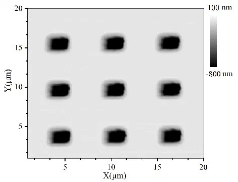 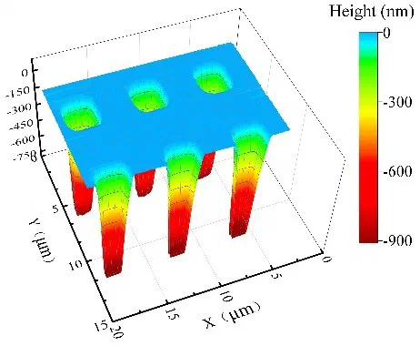 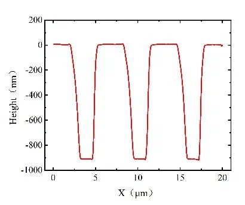 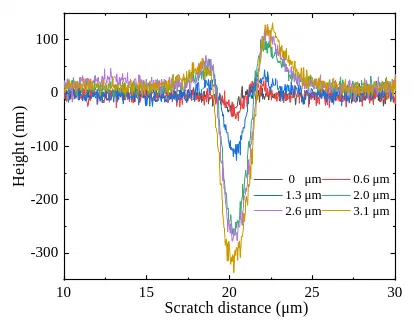 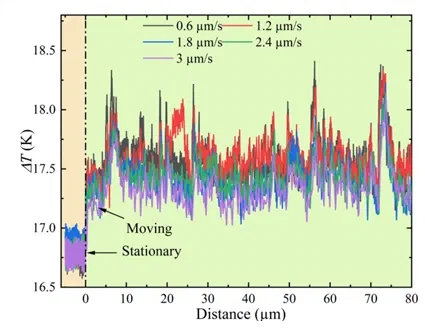


Figure: Surface topography, micro/nanofabrication, and measurement of contact thermal and mechanical parameters
4. Measuring and Modulating Ultrafast Energy Transfer in Semiconductor Nanofilms
Using an amplified femtosecond laser thermoreflectance technique, our group employed a pulse shaper to generate a double-pulse pump. By varying the time interval between the two pulses without changing the pump fluence, both enhancement and complete elimination of coherent optical phonons were achieved, providing direct experimental evidence that coherent optical phonons can improve the efficiency of ultrafast energy conversion in semiconductors. A theoretical model was established that relates three processes, namely electron absorption, band filling and electron-hole annihilation, to the reflectance signal of single-crystalline Bi₂Te₃ semiconductor films. The non-zero background signal originates from the electron-hole annihilation process and increases with pulse intensity; the two-temperature model accurately predicts the relaxation of intraband electron transitions in the conduction band; and the interplay between band filling and electron absorption causes the reflectance signal to take opposite signs, thereby revealing the intrinsic mechanism by which the reflectance signal varies with pulse intensity.
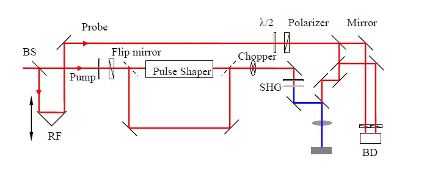 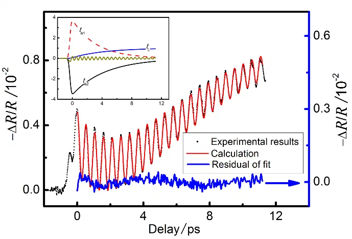 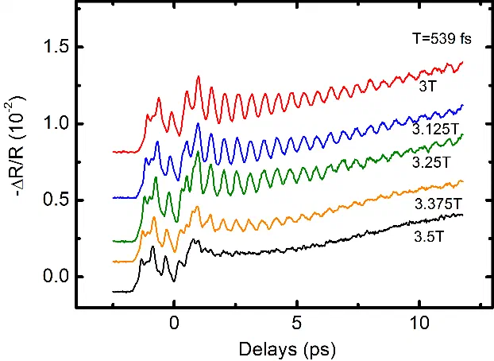


Figure: Measurement of ultrafast energy transfer in semiconductor films